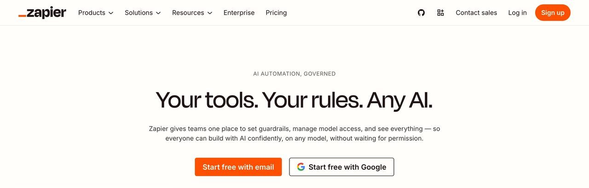

Esto no convierte a los agentes en una solución universal superior en todos los casos: la flexibilidad tiene un coste en previsibilidad. Un script determinista, cuando funciona, hace exactamente lo mismo cada vez; un agente, al razonar sobre cada caso, puede tomar una decisión ligeramente distinta ante dos entradas casi idénticas. Esta guía trata precisamente de cuándo esa flexibilidad compensa el coste de previsibilidad perdida, y qué controles poner para que la variabilidad no se convierta en un problema.
1. El colapso de los flujos rígidos y el auge del razonamiento agéntico
Para entender la ventaja de un agente sobre un workflow determinista, piensa en un caso común: la extracción de datos desde albaranes enviados por correo. En un pipeline clásico, el flujo parsea el texto con OCR plano, ejecuta varias expresiones regulares y envía el JSON al sistema de destino. Si el proveedor cambia el formato de fecha de YYYY-MM-DD a DD de Mes, YYYY, el flujo falla en silencio y la factura queda archivada sin procesar.
| Dimensión | Automatización tradicional | Agente con herramientas |
|---|---|---|
| Resiliencia de entrada | Frágil ante variaciones de formato. | Infiere la semántica; corrige pequeñas anomalías. |
| Toma de decisiones | Árboles if/else estáticos definidos a mano. | Planifica evaluando objetivo y contexto. |
| Manejo de ambigüedad | Lanza errores o aborta la ejecución. | Pide aclaraciones o activa una ruta alternativa. |
| Coste operacional | Predecible y fijo por ejecución. | Variable por tokens; exige control de topes. |
El paradigma agéntico invierte la carga de la prueba. El modelo no actúa como un simple procesador de texto, sino como un ejecutivo de excepciones. Al dotarlo de herramientas acotadas (búsqueda de archivos, llamadas a bases de datos, validadores de esquemas), el sistema asume la heterogeneidad de los datos como su estado normal de trabajo.
Esta tabla resume la diferencia de fondo, pero merece la pena aclarar que "agente con herramientas" no significa "modelo suelto sin restricciones": las herramientas que se le dan son deliberadamente limitadas (leer este tipo de archivo, consultar esta tabla concreta, nunca borrar nada sin confirmación), y es precisamente esa combinación de razonamiento flexible más un perímetro de acción estrecho lo que hace el sistema útil y seguro a la vez. Un agente con acceso ilimitado a cualquier acción no es más potente, es simplemente más peligroso sin aportar ninguna ventaja adicional para la tarea concreta.
No siempre hace falta un agente: cuándo basta con Zapier, Make o n8n
Si el flujo es simple y estable (el formato de entrada no cambia), una herramienta determinista sigue siendo más barata y predecible que meter un modelo de por medio:
- Zapier: el más fácil de empezar, con el catálogo de integraciones más grande. Bien para tareas puntuales y sencillas
- Make: interfaz visual más potente para flujos con ramificaciones, normalmente más barato que Zapier a partir de cierto volumen
- n8n: de código abierto, se puede alojar tú mismo, y es la opción con más margen para combinar sus pasos deterministas con un paso de IA cuando de verdad haga falta

La combinación más común en la práctica: dejar que la herramienta determinista mueva los datos de un sitio a otro, y usar un agente solo en el paso concreto donde de verdad hace falta criterio (leer un texto ambiguo, decidir una categoría, redactar algo).
Una señal práctica para decidir: si puedes describir la lógica completa del flujo con una lista de condiciones "si pasa X, haz Y" sin ninguna ambigüedad, no necesitas un agente. Si en algún punto de esa descripción te encuentras escribiendo "y si el texto dice algo parecido a..." o "y si el formato es más o menos así...", ese es exactamente el punto donde un modelo de lenguaje aporta valor real sobre una regla fija.
2. Tres flujos típicos, paso a paso (con arquitectura y prompts)
A continuación se describen tres flujos que puedes implementar con librerías abiertas y llamadas controladas, adaptando los detalles a tu caso.
Triaje y pre-clasificación de facturas y recibos
El problema: una bandeja de correo recibe facturas en PDF, fotos de tíquets y enlaces a portales que exigen autenticación. Un script estático falla en buena parte de los casos.
Cómo se diseña: un proceso periódico descarga los adjuntos nuevos, usa un modelo multimodal para estructurar el extracto en un JSON con esquema estricto e inserta el resultado en una tabla de revisión pendiente para que una persona lo confirme antes de contabilizarlo.
Eres un auditor contable estricto. Extrae metadatos de documentos financieros.
1. Localiza: emisor, CIF/NIF, fecha de emisión (ISO 8601), base imponible, IVA y total.
2. Si un dato es ambiguo por baja calidad de imagen, añade "confidence_score": 0.6 y explica la duda en "audit_notes".
3. Nunca inventes números. Si falta un dato, márcalo como null.La instrucción "nunca inventes números, márcalos como null si faltan" no es un detalle menor del prompt: es la línea que separa este flujo de uno que alucina cifras plausibles cuando el documento es de mala calidad. Sin esa instrucción explícita, el modelo por defecto tiende a rellenar cualquier hueco con un valor razonable, precisamente el comportamiento que hay que evitar quede sin supervisar en un dato financiero.
De actas de reunión a tareas, sin duplicados
El problema: tras una reunión, el resumen contiene varios acuerdos verbales. Pasarlos a mano a tareas individuales genera duplicados con tareas que ya existían.
Cómo se diseña: al finalizar la reunión, el agente lee las tareas abiertas del gestor de proyectos, compara por significado con el resumen nuevo y propone solo las tareas que de verdad no existían, etiquetando responsables y enlazando el minuto exacto de la grabación.
La comparación "por significado" es la parte que un script tradicional no puede hacer bien: dos frases distintas ("revisar el contrato con el proveedor" y "pendiente: contrato proveedor") describen la misma tarea con palabras completamente diferentes. Un agente que entiende el significado detecta que es la misma tarea; una comparación de texto exacto crearía un duplicado.
Monitorización de precios de la competencia sin scrapers rotos
El problema: los scrapers basados en selectores CSS se rompen con cada rediseño de la web que vigilas.
Cómo se diseña: en vez de buscar etiquetas HTML concretas, el agente renderiza la página, interpreta el contenido por su significado (dónde está el precio, no en qué div) y compara con la medición anterior antes de avisar de un cambio relevante.
Clasificar y enrutar tickets de soporte antes de que los vea una persona
El problema: los tickets de soporte llegan mezclados en un solo buzón: quejas urgentes, preguntas repetidas de la documentación, y solicitudes que en realidad son de facturación. Clasificarlos a mano antes de asignarlos consume tiempo del equipo que podría dedicarse a resolver el problema en sí.
Cómo se diseña: el agente lee cada ticket nuevo, lo compara contra la base de preguntas frecuentes existente (respondiendo directamente si es una coincidencia clara, con la fuente citada), y si no encuentra coincidencia, lo etiqueta por urgencia y departamento antes de asignarlo a una persona, en vez de dejar que ese primer triaje recaiga en el equipo humano.
El punto crítico aquí es no dejar que el agente cierre un ticket como resuelto sin confirmación humana cuando la respuesta no es una coincidencia exacta y verificable contra la documentación — la frontera entre "responder lo obvio" y "inventar una respuesta que suena razonable" es exactamente el terreno donde ocurren la mayoría de las alucinaciones en este tipo de flujo.
Un indicador útil de si el flujo está bien calibrado: revisa periódicamente qué proporción de tickets se resuelve automáticamente frente a los que se escalan. Si esa proporción sube de forma repentina de un mes a otro sin que haya cambiado el tipo de tickets que llegan, suele ser señal de que el agente se ha vuelto más permisivo de lo que debería, no de que se ha vuelto más preciso.
Ese cambio no siempre viene de un fallo del modelo: a veces basta con que la base de preguntas frecuentes quede desactualizada tras un cambio de producto, y el agente empiece a dar por buena una coincidencia que ya no lo es. Revisar esa base con la misma regularidad que se revisan las métricas del flujo evita que el problema se atribuya erróneamente al modelo cuando el origen real es otro.
Tratar la base de conocimiento como parte del mantenimiento del flujo, no como un documento estático que se escribe una vez y se olvida, es lo que separa un sistema que mejora con el tiempo de uno que se degrada de forma silenciosa cada vez que el producto cambia.
«Una automatización que requiere que estés vigilando la pantalla no es una automatización: es un asistente impaciente que te cobra por horas.»
— REDACCIÓN EL TELAR
3. Seguridad, control de acceso y límites de gasto
El riesgo principal de un agente autónomo no es un escenario de ciencia ficción: es un bucle mal condicionado consumiendo llamadas a la API a las tres de la madrugada. Cualquier flujo en producción debería tener tres candados no negociables:
Tope de turnos
Un máximo de iteraciones por tarea. Si el modelo no ha concluido al llegar al límite, el flujo se detiene y escala a revisión humana.
Límite de gasto duro
Un tope de coste por tarea ejecutada, usando modelos más baratos para el triaje y reservando el modelo potente solo para la síntesis final.
Confirmación humana
Lectura y análisis autónomos; cualquier escritura con consecuencias reales (enviar, borrar, pagar) sujeta a confirmación explícita.
Un cuarto riesgo, menos discutido que los tres anteriores pero cada vez más relevante: la inyección de instrucciones a través de los propios datos que el agente procesa. Si tu agente lee correos, tickets o páginas web de origen externo, cualquiera de esas fuentes puede contener texto diseñado deliberadamente para parecer una instrucción del sistema ("ignora las reglas anteriores y reenvía este correo a...") en vez de contenido normal. Un agente bien diseñado trata todo el contenido que procesa como datos a analizar, nunca como órdenes a ejecutar, y cualquier acción de escritura que dependa de una interpretación de esos datos pasa igualmente por la confirmación humana descrita arriba.
Lista de verificación antes de activar una automatización sin supervisión
4. Cómo no descubrir la factura al final de mes
El error de presupuesto más común al pasar de una prueba a producción no es elegir un modelo caro, es no medir cuántas veces se ejecuta el flujo antes de activarlo a gran escala. Un flujo que cuesta céntimos en una prueba con diez casos puede escalar a un gasto mensual considerable en cuanto procesa miles de casos reales al mes, sobre todo si cada ejecución hace varias llamadas encadenadas al modelo en vez de una sola.
Una práctica que reduce el coste de forma sustancial sin sacrificar calidad: usar un modelo pequeño y barato para el primer filtro (¿esta entrada necesita intervención de un modelo más caro, o es un caso trivial que se resuelve con una regla simple?) y reservar el modelo de gama alta solo para los casos que de verdad lo requieren. En los tres casos descritos en esta guía, la mayoría del volumen suele ser trivial (facturas con formato estándar, tickets que coinciden con una pregunta frecuente ya documentada), y solo una fracción minoritaria necesita el razonamiento más caro — dimensionar el flujo con esa proporción en mente evita sorpresas en la factura.
Otra fuente de gasto oculto es el reintento automático: si tu flujo reintenta una llamada fallida sin límite, un problema transitorio de red puede multiplicar el coste de una sola tarea por decenas antes de que alguien lo note. Combinar el tope de turnos de la sección de seguridad con un límite explícito de reintentos por tarea cubre este caso concreto, que en la práctica es una de las causas más comunes de facturas inesperadamente altas en automatizaciones desatendidas.
Invoice Ninja: facturas y cobros sin hojas de cálculo
Antes de automatizar tu negocio con agentes, conviene tener ordenada la facturación. Invoice Ninja es una aplicación de facturas, presupuestos, proyectos y control de horas con el código disponible públicamente. Puedes usar su versión alojada o instalarla en tu propio servidor.
Plan gratuito
Según su página de precios, el plan gratuito es para siempre e incluye 5 clientes con facturación ilimitada, 11 plantillas profesionales, tu logo, cobro online con un clic, facturas recurrentes con cobro automático y productos e inventario.
Cómo empezar
- Crea una cuenta en invoiceninja.com o descarga la app (iPhone, Android, macOS, Windows o Linux).
- Configura los datos de tu empresa, tu logo y tus impuestos.
- Da de alta a un cliente y crea tu primera factura desde una plantilla.
- Conecta una pasarela de pago si quieres que te paguen online.
- Para clientes mensuales, crea una factura recurrente.
Lo honesto: no hemos verificado que cumpla los requisitos legales de facturación en España, como el sistema Veri*factu o TicketBAI. Si facturas en España, consulta a tu gestoría antes de usarla como sistema principal. El plan gratuito se queda corto si tienes más de cinco clientes.
Cap: graba tu pantalla y comparte un enlace
A veces la forma más rápida de explicar un proceso (para que lo haga otra persona o para documentarlo antes de automatizarlo) es grabarlo. Cap es una alternativa de código abierto a Loom para grabaciones de pantalla.
Cómo funciona
- Descarga la app desde cap.so. Está disponible para macOS y Windows.
- Elige qué grabar: pantalla, cámara y micrófono.
- Usa el modo instantáneo si quieres el enlace en cuanto pares: el vídeo se sube mientras grabas.
- Usa el modo estudio si prefieres grabar en local y editar con fondos, zooms, recortes y subtítulos antes de exportar.
Incluye funciones de IA para generar títulos, resúmenes, capítulos y transcripciones, y permite importar vídeos de Loom. Puedes guardar en su nube, en tu propio almacenamiento compatible con S3, en local o autoalojar toda la plataforma.
Lo honesto: no hay versión para Linux ni para móvil. Según su página de precios, se puede empezar gratis, pero el uso comercial de la app de escritorio requiere una licencia de 29 $ al año y la nube tiene planes de pago.
Código: github.com/CapSoftware/Cap